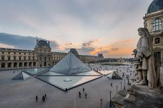

Senoves stebuklu muziejus
Louvre Museum
Louvre, national museum and art gallery of France, housed in part of a large palace in Paris that was built on the right-bank site of the 12th-century fortress of Philip Augustus. It is the world’s most-visited art museum, with a collection that spans work from ancient civilizations to the mid-19th century.
History of the building
In 1546 Francis I, who was a great art collector, had this old castle razed and began to build on its site another royal residence, the Louvre, which was added to by almost every subsequent French monarch. Under Francis I, only a small portion of the present Louvre was completed, under the architect Pierre Lescot. This original section is today the southwestern part of the Cour Carrée. In the 17th century, major additions were made to the building complex by Louis XIII and Louis XIV. Cardinal de Richelieu, the chief minister of Louis XIII, acquired great works of art for the king. Louis XIV and his minister, Cardinal Mazarin, acquired outstanding art collections, including that of Charles I of England. A committee consisting of the architects Claude Perrault and Louis Le Vau and the decorator and painter Charles Le Brun planned that part of the Louvre which is known as the Colonnade.
